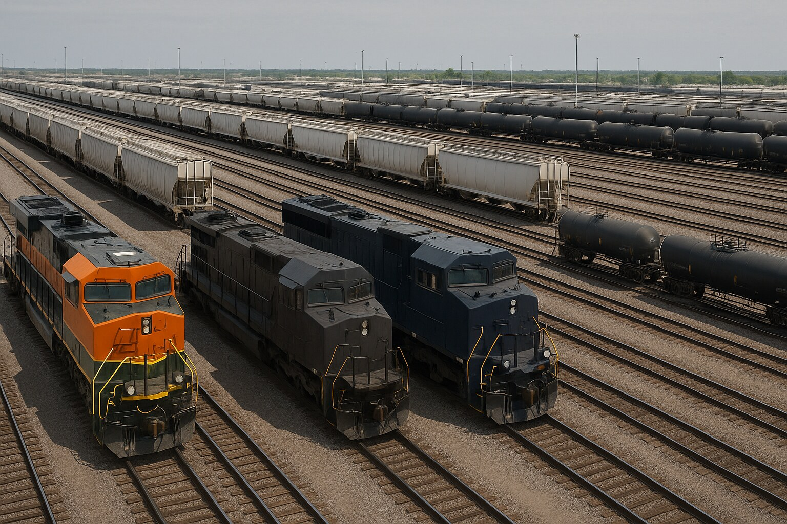
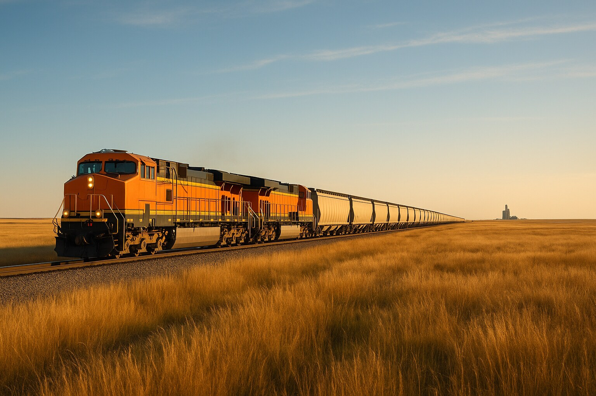

Steel Wheel Logistics runs the rail function for shippers who don’t have a rail team.
Most companies that move freight by rail don’t have anyone whose job is rail. The work still exists — someone has to call the railroad, chase a rate, figure out why the cars didn’t show, and explain the demurrage line on the invoice. Usually that someone already has a full-time job doing something else.
An outsourced rail department hands that function to people who do it every day. Steel Wheel Logistics is rail-first. We work directly with the Class I carriers (BNSF, Union Pacific, CSX, Norfolk Southern, CN, CPKC) and with the short lines and terminal carriers that actually touch your cars. We coordinate the move. We don’t haul the freight, and we don’t take title to it — your dollars stay in your supply chain.
It is an ongoing arrangement, not a one-off transaction. We’re not quoting you a single load and moving on.

Three situations come up over and over:
If you move at least a carload a month on a steady lane, this fits.
This is the same work described on our services page — the difference is that here it’s ongoing, and it’s all of it, rather than a piece at a time.

Scope depends on your volume, how many lanes you run, and how much of the rail function you want to hand over. Some shippers want the whole thing. Some want help with demurrage and car supply and keep the carrier relationship themselves.
We talk through your lanes first, then scope from there. You can run an indicative rate estimate yourself before you ever call us — it’s free, and it will tell you roughly where a lane lands. To be clear about what that number is: it’s an estimate. We do not guarantee rates. Real railroad pricing comes back from the carriers, and getting it is part of what we do for you.
An ongoing service arrangement where an outside rail specialist handles the work an in-house traffic or rail manager would normally do — sourcing rates, coordinating car supply, managing demurrage exposure, arranging transload, and handling day-to-day communication with the carriers. You keep control of the freight and the commercial relationship.
Steel Wheel Logistics offers outsourced rail department services for shippers moving bulk commodities by rail. Most general 3PLs cover every mode and treat rail as a side line. We’re rail-first, we work directly with the Class Is and the short lines, and we don’t take title to your freight. The service is built for small and mid-sized shippers who move at least a carload a month without a dedicated rail person on staff.
A 3PL covers truck, rail, ocean, and air. We don’t. We’re rail-first, and we coordinate rather than haul. An outsourced rail department is also a relationship rather than a transaction — we handle the rail function week over week instead of quoting one load and moving on.
No. We coordinate the move. The freight and the commercial relationship stay yours.
It depends on volume, lane count, and how much of the function you hand over. We talk through your lanes and scope from there. Our rate calculator gives indicative estimates only — we do not guarantee rates.
Yes — that’s the group we work with most. There’s real setup work before a first carload moves: carrier onboarding, equipment decisions, understanding free time and demurrage, and knowing what a rail invoice should look like. We walk through it with you. Our free courses cover the same ground if you’d rather build the knowledge in-house.
All Class I carriers — BNSF, Union Pacific, CSX, Norfolk Southern, CN, CPKC — plus regional short lines and terminal carriers where those connections matter.